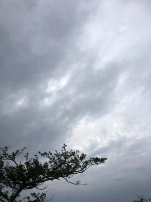
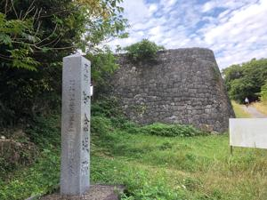
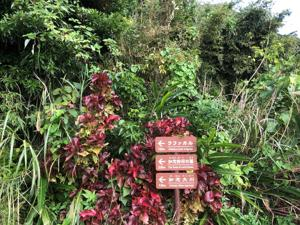
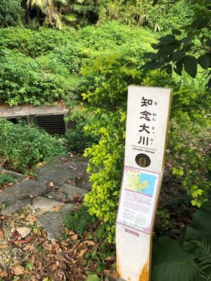
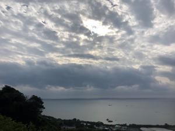

うるがいの話 ある日
最新: 霊地９番目まで【うるがいの話 ある日】とは 一日だけのプログです
『うるがいの話』の最新一日だけのプログで、通信料が少なく経済的だ。カニの画像をクリックすると全ての日付が載る『うるがいの話』サイトを表示します
|
|
【うるがいの話】 うるがい(ｳﾙｶﾞｲ urugai)とは、『もずくがに』の名前でとても大きくなります。 |
|---|---|
|
|
【カミマヤーの話】 猫のことを方言でマヤーといいます。カミマヤー（kamimayaa）とは、神の猫のことです。 |
|
【たながぁの音楽】 たながぁ（ﾀﾅｶﾞｰ tanagaa）とは手長えびのことで、何種類かあり大きいのは車 エビぐらいになります。 |

|
【ぶながぁの話】 ぶながぁ(ﾌﾞﾅｶﾞｰ bunagaa)とは、赤い髪の毛、赤い身体、そして身長は１ｍ２０ｃｍ ぐらい、川の蟹を食べているの目撃された。場所は沖縄県国頭郡大宜味村のと ある村僕の隣近所に住んでいる爺さんから、聞いた話です。 |
|
|
【ギーマの話】 ギーマ(giima)とは、山原の里山に咲くスズランに似た、 花を付けます。実は食べられます、 気が付くと口の周りが紫になっています。 |
2022年12月30日 (金）霊地９番目まで
17:31
   
９月９日から始めた「東御廻り」霊地１４箇所の８番、９番までをバイクでい
った事になる。昨日はまずまずの天気だったので、長袖のヒーティングに長袖
シャツのいでたちでバイクに乗り、出発。１５分後、だんだん寒くなり後悔し
始めた。30分後、知念城後に着くなり念のため持ってきたフードコートを着け
る。持ってきて良かった！。８番目の知念森(ちにんむい)グスクは、整備が殆
ど行われてなく雑草が生い茂っていた、そしてこれまであった「東御廻り」の
案内板もなく、少し戸惑う。知念按司の墓への案内板があったので行く、凄い
ところで全く整備されていない、尖った岩がごつごつと急伸な登り坂を登る、
道はあたっているのだろうかと不安になったが、史跡はちゃんとあった。そし
て案内版があった９番目の知念大川(ちねんうっかー)へ森の中を歩いていく。
そこは民家が近くにある道路の傍だった。こんなところに、人は来るのか？、
でも私が来る先にレンターで来たブーツの女の人と、帰るときに駐車場から歩
いてきた男性とすれ違った。残りの５か所を、来年は一気に攻めてみようと決
意を新たにする。

１７時２３分 ビットコインの総資産 ￥６、３１７（↓８７）